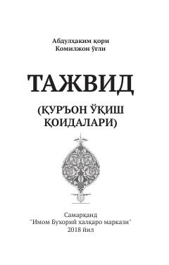

TQQur'oni Karimni to'g'ri o'qish uchun tajvid qoidalari qo'llanmasi.
Ushbu kitob Qur'oni Karimni to'g'ri va tartibli o'qish qoidalarini — tajvid ilmini o'rgatishga bag'ishlangan. Har bir musulmon uchun zarur bo'lgan bu qoidalar sodda va tushunarli tarzda bayon etilgan. Kitob 2018-yilda Imom Buxoriy xalqaro markazi tomonidan nashr etilgan.